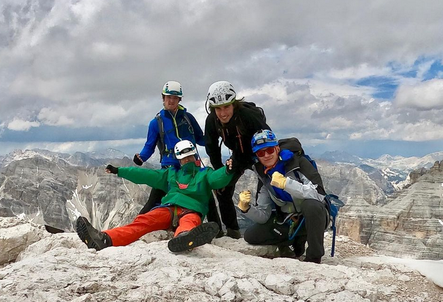

Interaktívny obrázok
Na obrázku som ja s partiou pod vrcholom Tofana di Rozes v Dolomitoch, kam sme sa vyšplhali ferratou.
Na tomto obrázku môžte vyskúšať funkčnosť značiek prejdením myšou ponad ne.


Toto som ja
Toto je Kubo
Toto je Ondrej
Toto je Tomero
Tofana di Rozes